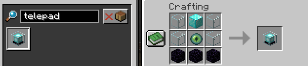
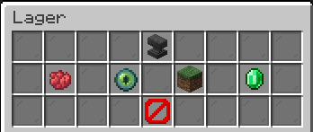

With the telepad you can teleport to different other telepads aacross the worlds of the server.
The Telepad is an multi block structure of 3x3 with an beacon in the middel.
Cosmetic
You can change the name with minimessage support and you can also change the block appering in the /pad and destination interface.
Permissions
- Give player permissions to the telepad.
- Manage those permissions in an interface found inside the telepad.
Teleport
- Inside the Telepads interface you can manage the destination where to get teleported if you walk over the beacon.
- If the Telepad is on Level two or higher you can teleport there via /pad
Level
Level: 2
- Telepad can be set public
- Telepad is visible in /pad
Obtaining
The telepad can be obtained via a crafting recepie whioch need:
- 1x Diamond block
- 1x Ender eye
- 3x Obsidian
- 4x Glass
- 
